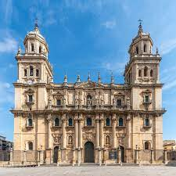
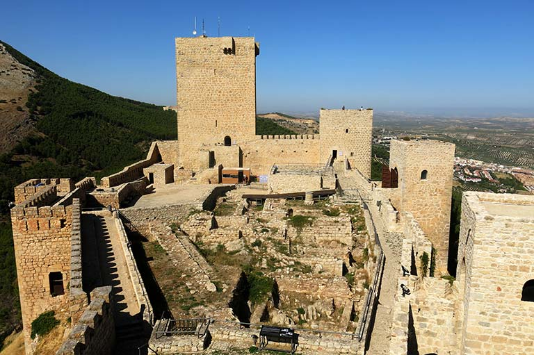
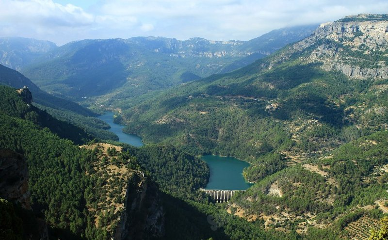
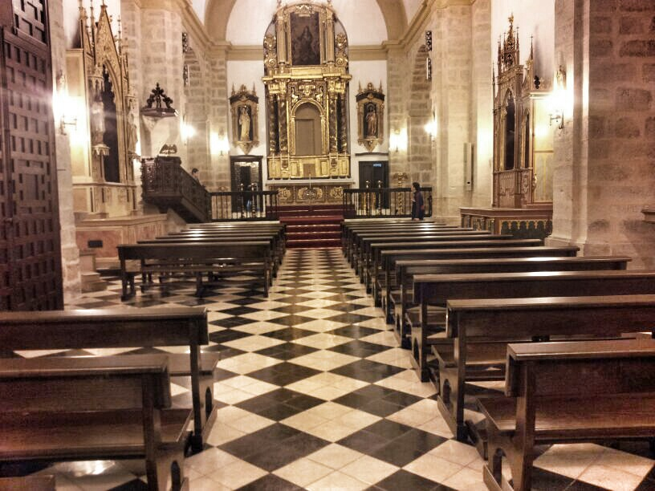
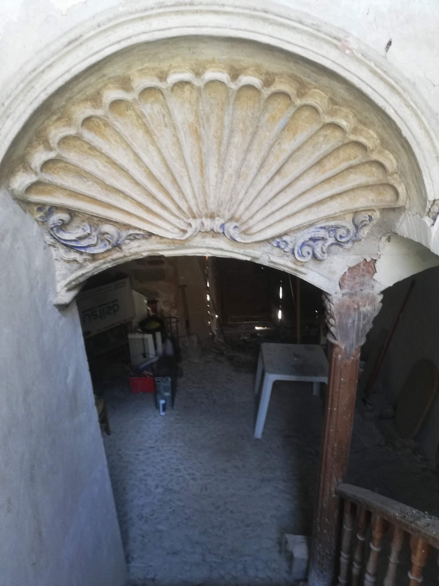
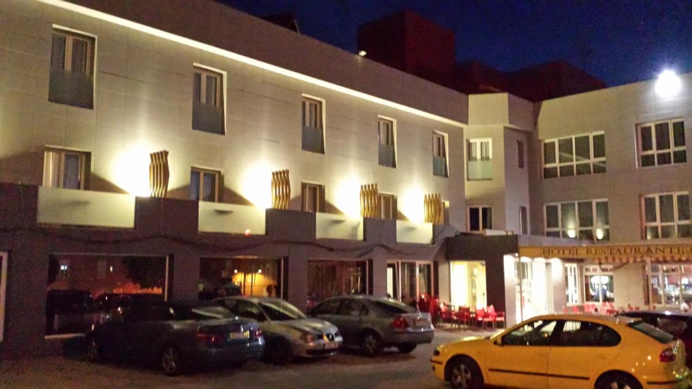
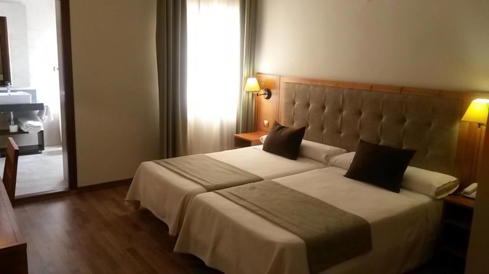

.JPG)
IGLESIA NUESTRA SEÑORA DE LA ASUNCIÓN

MÁS SOBRE LA PROVINCIA
Catedral de Jaén
Ubicada en la plaza de Santa María. Esta fue concebida en el siglo XVI para sustituir al anterior templo gótico del siglo XV. Destacan la sala capitular y la sacristía, que son la obra cumbre de Andrés de Vandelvira, y una de las obras más importantes del renacimiento español. También es sobresaliente su fachada principal, una de las principales obras del barroco español.

Castillo de Santa Catalina
Antigua construcción defensiva de acabado cristiano-medieval, localizado en una estribación de la Sierra de Jabalcuz desde la cual se divisa toda la ciudad de Jaén, los olivares y las montañas circundantes de la zona. Es una de las tres fortalezas que constituyen el recinto defensivo Castillo de Jaén, junto con el Alcázar Viejo y el Abrehui.

Parque Natural de las Sierras de Cazorla, Segura y Las Villas
Espacio natural situado en el noreste de la provincia, que cuenta con una extensión de 214 336 ha, tratándose del mayor espacio protegido de España y el segundo de Europa. Está declarado como Reserva de la Biosfera por la UNESCO desde 1983, como Parque natural desde 1986 así como también Zona de Especial Protección para las Aves desde 1987. Toda su belleza paisajística y riqueza biológica se unen al patrimonio cultural que existe en la zona, haciendo de su entorno una de las zonas naturales más visitadas de toda España.

GALERÍA DE IMÁGENES
.png)
|
 |
.png).png)
|
.jpg)
|
||
| Plano refugios antiaéreos |
Iglesia Santa Isabel de los Ángeles |
Museo Iglesia Nuestra Señora de la Asunción |
Órgano Iglesia Nuestra Señora de la Asunción |

|
 | |||
| Corpus Christi |
Parque Natural de las Sierras de Cazorla, Segura y Las Villas |
Casa de la Inquisición |
HOTELES
En Villacarrillo, podemos alojarnos en uno de los mejores hoteles de la provincia. Este tiene como nombre “Hotel Sierra de las Villas”, es un maravilloso hotel que recientemente le han concedido las 3 estrellas debido a su última remodelación. Consta de un aparcamiento gratuito y un servicio de buffet. Es una excelente opción para quedarse si visitamos la zona.


RESTAURANTES
En este acogedor pueblo podemos visitar numerosos restaurantes en los que podemos degustar exquisitos platos que deleitan nuestro paladar. Entre ellos, encontramos:
{kind=link}
{kind=link}
{kind=link}